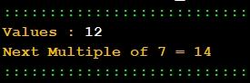

Exercício
Dificuldade
Pontos
Data limite
Créditos
Ficha10_010
Normal
4.0
12/10/2022 19:32:00
(c)M@nso 2021
Next multiple of 7
Constrói um algoritmo que solicita ao utilizador um valor e depois imprime o próximo múltiplo de 7.

Input
Output
25
Values : 25 Next Multiple of 7 = 28
798
Values : 798 Next Multiple of 7 = 805
992
Values : 992 Next Multiple of 7 = 994
600
Values : 600 Next Multiple of 7 = 602
695
Values : 695 Next Multiple of 7 = 700
807
Values : 807 Next Multiple of 7 = 812
519
Values : 519 Next Multiple of 7 = 525
174
Values : 174 Next Multiple of 7 = 175
760
Values : 760 Next Multiple of 7 = 763
679
Values : 679 Next Multiple of 7 = 686
Algorithmi 22.05 Student version (c) Antonio M@nso 2022 Instituto Politécnico de Tomar - All rights reserved